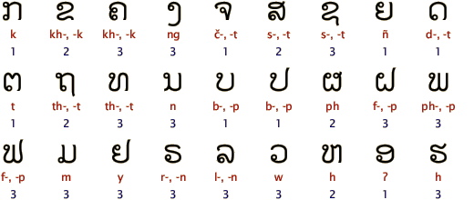

지금의 라오어는 라오 고유의 언어와 빠리-산싸낏(범어, 산스크리트어)이 더해져 만들어졌다.
라오어의 어순은 영어와 비슷해 보이지만, 꾸미는 말이 주로 동사나 명사 뒤에 붙는다.
자음은 높은 음, 중간 음, 낮은 음으로 나뉘고 모음은 장음과 단음으로 나뉜다.
몇 개의 성조 부호가 덧붙어져 길게 높았다 낮아지는 음, 길게 낮았다 높아지는 음, 짧은 높은 음, 짧은 중간 음 등 성조의 변화가 다양하다.
타이-카다이 패밀리로 발음과 문자가 태국어와 유사하지만 언어학적으로 다른 언어이며 알파벳은 보다 간결하다.

태국어와 약 70% 정도의 단어가 비슷해서 문장의 일부를 이해하지만 부정어 등의 사용이 달라 의미 전달에 어려움이 있다.
태국 북동부 이산지역 언어와 거의 같아 태국에서는 라오어를 이산어라고도 부른다.
태국어는 어미에 카, 크랍 등 존칭어를 쓰지만 라오어는 적거나 없다.
그럼에도 라오어는 문장을 완성형으로 사용하여 정중한 듯 들리는 특징이 있다.
태국어를 읽으면 라오어를 읽고, 배우기 쉽지만 반대의 경우는 보다 어렵다.